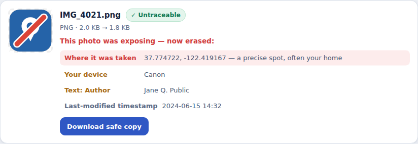
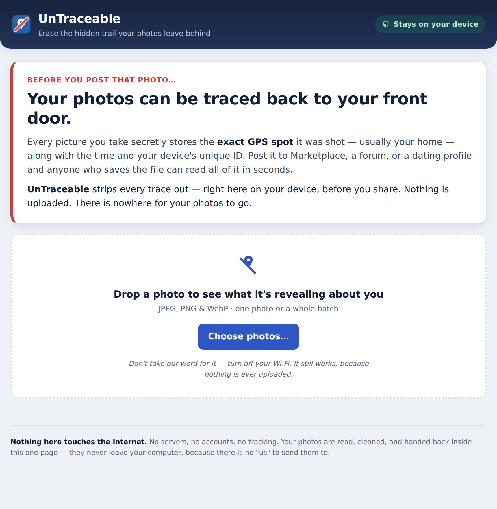

For anyone who sells stuff online
You shot it on your couch. Now every stranger who saves that photo has the GPS of your living room. UnTraceable wipes it out on your own computer, before you post. Nothing gets uploaded, because there's nowhere to upload it to.
Runs in your browser, on your computer. Nothing uploaded. No account. One-time $7.

You take a photo of the couch you're selling. It's sitting in your living room. You post it to Marketplace and move on with your day.
Your phone stamped that photo with the exact spot it was taken. Latitude and longitude. Close enough to drop a pin on your front door.
It's not in the picture. It's attached to the picture. You'd never notice it, but it rides along with the file, and it stays there for anyone who knows where to look. Post it, forward it, email it, and the location goes too.
There are free websites that pull it right back out. Drag the image in, get a map. That's the whole trick.
So the guy who replies "is this still available?" at 11pm already knows where the couch is. Before you've agreed to meet anywhere. Before he's said one real thing to you.
Maybe you just don't like a stranger knowing where you sleep. Maybe there's a specific person you got away from, and where you live is the whole thing you're protecting. The file doesn't care either way. It leaks the same. You wanted to sell a couch. You didn't mean to post your address next to it.
Your camera buries a pile of hidden data inside every file. UnTraceable reads it back out and shows you, in plain words, what's riding along:
Open UnTraceable in your browser. It's one file you already downloaded, not a website you log into.
JPEG, PNG, or WebP. It shows you every piece of hidden data buried in the file.
You get a fresh copy with that stuff stripped out. Same picture, same quality. Upload that one to your listing.

Turn your wifi off, then clean a photo anyway. It still works. That's the proof nothing is leaving your computer.
I built this because trusting some random "strip your metadata" website with the exact photos you're worried about seemed insane to me. So this one can't see your photos. Neither can I. Neither can anyone.
Straight about the job: it strips the hidden data out of photo files. It doesn't touch the actual picture, and it can't make you anonymous online. It's not a VPN.
One file. Seven bucks. Runs on your own computer, works with your wifi off, nothing uploaded.
Get UnTraceable ($7)